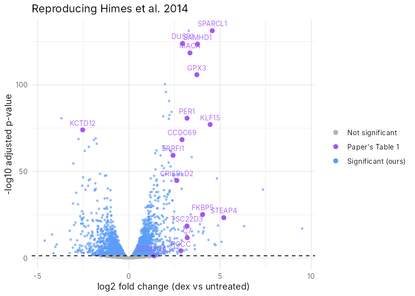

Before you start
- You've done From raw counts to differential expression and Volcano and MA plots. This project uses the same tools on your own.
- You can read and edit a little R. (New to R? Start with the R series.)
- Plan about 3 hours, in one sitting or spread over a few evenings. Everything runs free in Google Colab.
Learning objectives
By the end of this project you will be able to: turn a paper's claim into a concrete, checkable target; re-analyse the paper's public data on your own; compare your results with the published table gene by gene; explain the differences you find instead of hiding them; and write it all up as a short reproduction report for your portfolio.
Why reproduce a paper?
Following a tutorial proves you can copy steps. Reproducing a published result proves you can work on your own: read a methods section, get the real data, make your own analysis choices, and judge whether your answer agrees with the authors. It is exactly what you would do on day one in a lab, and it is one of the strongest projects you can show an employer or a PhD committee.
It also teaches the most important research habit of all: a different pipeline never gives exactly the same numbers. The skill is knowing which differences matter.
The paper in 60 seconds
Himes BE et al. (2014), PLoS One. Steroids such as dexamethasone are a mainstay asthma treatment, but how they calm inflammation in airway smooth muscle was poorly understood. The authors took airway smooth-muscle cells from 4 donors, split each donor's cells into an untreated and a dexamethasone-treated (1 µM, 18 hours) sample, and sequenced all 8 with RNA-seq.
- They report 316 differentially expressed genes (Benjamini-Hochberg adjusted p < 0.05).
- Table 1 lists the 17 strongest genes (q-value < 1E-10). It includes well-known steroid-response genes (DUSP1, KLF15, PER1, TSC22D3, FKBP5) and less-studied ones, including CRISPLD2, which they went on to study in the lab.
- Figure 1 shows a volcano plot of all genes.
Your target: re-create Table 1 and the volcano plot from the public data, and decide which of the 17 genes hold up.
Their pipeline and yours
| Step | Himes et al. 2014 | This project |
|---|---|---|
| Alignment | TopHat 2.0.4 to hg19 | Already done: you start from gene counts |
| Gene annotation | RefSeq (hg19) | Ensembl genes |
| Quantification | Cufflinks 2.0.2 (FPKM per transcript) | Read counts per gene |
| Statistics | Cuffdiff 2.0.2 | DESeq2, paired by donor |
The counts come from the Bioconductor airway package, which re-counted the same sequencing reads (GEO GSE52778) against Ensembl genes. BioNexus keeps a copy as three small CSV files, plus the paper's Table 1 typed into himes2014-table1.csv, so everything loads in seconds.
▶ Work in Google Colab
The notebook has the data loader ready and an empty cell for each task. Set the runtime to R (Runtime, then Change runtime type, then R). Installing DESeq2 takes about 3 to 5 minutes the first time.
Your mission: five tasks
Try each task yourself first. Open a hint only when you are stuck, and use the checkpoint to confirm you are on track before moving on.
1Load the data and check the design
Load the counts, the sample table and the gene names. Before any statistics, confirm the experiment's structure: how many samples, how many donors, and does every donor have one untreated and one treated sample?
Hint
table(samples$cell, samples$dex) cross-tabulates donor against treatment.
Checkpoint
8 samples; 4 donors (cell lines N052611, N061011, N080611, N61311), each with exactly one untrt and one trt sample. This is a paired design.
2Run a paired differential-expression analysis
Build a DESeq2 dataset whose design accounts for the donor, keep genes with at least 10 reads in at least 4 samples, run DESeq2 and get results at an FDR of 0.05.
Hint
The design is ~ cell + dex: the variable you test goes last. Filter with rowSums(counts(dds) >= 10) >= 4, and ask for results(dds, alpha = 0.05).
Checkpoint
16,139 genes pass the filter, and about 4,081 have an adjusted p-value below 0.05. Yes, that is far more than the paper's 316. Hold that thought for Task 5.
3Compare your results with Table 1
Load himes2014-table1.csv and join it to your results by gene symbol. Call a gene reproduced if your adjusted p-value is below 0.05 and your fold change points in the same direction as the paper's. Then compare the sizes of the fold changes.
Hint
Add a symbol column to your results, then use merge(paper, ours, by = "symbol"). sign() gives the direction of a fold change, and cor() compares the two sets of fold changes.
Two traps in the paper's table
Old gene names. The paper lists C13orf15; that gene has since been renamed RGCC. The CSV gives both names. Gene names change over time, which is one reason analysts work with stable IDs like Ensembl's.
A mislabelled column. The table's header says "Ln[Fold Change]", but the numbers are log2 values: for C7, log2(38.41 / 3.76) = 3.35, while the natural log would be 2.32. Cuffdiff reports log2 fold changes. Checking a header against the raw numbers is a habit worth keeping.
Checkpoint
16 of the 17 genes reproduce, and your fold changes track the paper's closely (correlation about 0.96). One gene does not reproduce. Which one?
4Make a volcano plot with the paper's genes labelled
Plot every gene's log2 fold change against its significance, colour the significant ones, and label the 17 genes from Table 1. Yours should look much like this:

Hint
Turn the results into a data frame, drop rows where padj is NA, and plot -log10(padj) against log2FoldChange with ggplot2. A second geom_point() and a geom_text() on just the Table 1 genes adds the labels.
5Explain the differences: your reproduction report
This is the part that makes it research. Write a short report (half a page is enough) that answers:
- Why do you find about 4,081 significant genes when the paper found 316? List at least two differences between the pipelines that could explain it.
- Which gene did not reproduce, and why might that be? Look at its raw counts in every sample before you answer.
- One gene reproduced but with a noticeably smaller fold change. Find it and look at its counts donor by donor. What do you notice?
- Overall verdict: does the paper's main conclusion (dexamethasone strongly switches on CRISPLD2 and the classic steroid-response genes) hold up?
- A methods paragraph (4 to 6 sentences) describing exactly what you did, with tool versions, so someone else could repeat it.
Hint for questions 2 and 3
Look up the gene's Ensembl ID with rownames(genes)[genes$symbol == "SERPINA3"], then print counts[id, ]. Remember the column order alternates untreated, treated for each donor.
Think like a reviewer
Before you call your report finished, ask the questions a reviewer would ask:
- Only 4 donors: how much would one unusual donor change the result?
- The cells were grown in a dish. Would the same genes respond in a patient's airway?
- Is a list of 316 genes, or of 4,081, the "right" answer? What would you need to decide?
- Which result would you trust enough to spend months on in the lab, and why did the authors pick CRISPLD2?
Model solution
Only open this after you have tried every task. Comparing your own reasoning with it is where most of the learning happens.
Show the model solution code
library(DESeq2) library(ggplot2) base <- "https://raw.githubusercontent.com/MennahBassiouny/bionexus/main/" counts <- as.matrix(read.csv(paste0(base, "airway-counts.csv"), row.names = 1)) samples <- read.csv(paste0(base, "airway-samples.csv"), row.names = 1) genes <- read.csv(paste0(base, "airway-genes.csv"), row.names = 1) paper <- read.csv(paste0(base, "himes2014-table1.csv")) samples$cell <- factor(samples$cell) samples$dex <- factor(samples$dex, levels = c("untrt", "trt")) samples <- samples[colnames(counts), ] # Task 1: check the design table(samples$cell, samples$dex) # Task 2: paired DESeq2 analysis dds <- DESeqDataSetFromMatrix(counts, samples, design = ~ cell + dex) keep <- rowSums(counts(dds) >= 10) >= 4 dds <- dds[keep, ] nrow(dds) # 16139 dds <- DESeq(dds) res <- results(dds, alpha = 0.05) res$symbol <- genes[rownames(res), "symbol"] sum(res$padj < 0.05, na.rm = TRUE) # 4081 # Task 3: compare with Table 1 ours <- as.data.frame(res[, c("symbol", "log2FoldChange", "padj")]) cmp <- merge(paper[, c("symbol", "paper_log2fc")], ours, by = "symbol") cmp$our_log2fc <- round(cmp$log2FoldChange, 2) cmp$reproduced <- cmp$padj < 0.05 & sign(cmp$our_log2fc) == sign(cmp$paper_log2fc) cmp <- cmp[order(cmp$padj), c("symbol", "paper_log2fc", "our_log2fc", "padj", "reproduced")] print(cmp, row.names = FALSE) sum(cmp$reproduced) # 16 round(cor(cmp$paper_log2fc, cmp$our_log2fc), 2) # 0.96 # Task 4: volcano plot with the paper's genes labelled v <- as.data.frame(res) v <- v[!is.na(v$padj), ] v$group <- ifelse(v$symbol %in% paper$symbol, "Paper's Table 1", ifelse(v$padj < 0.05, "Significant (ours)", "Not significant")) ggplot(v, aes(log2FoldChange, -log10(padj), colour = group)) + geom_point(size = 0.8, alpha = 0.6) + geom_point(data = subset(v, group == "Paper's Table 1"), size = 2.2) + geom_text(data = subset(v, group == "Paper's Table 1"), aes(label = symbol), vjust = -0.8, size = 3, show.legend = FALSE) + scale_colour_manual(values = c("Not significant" = "grey70", "Significant (ours)" = "#5b9cf8", "Paper's Table 1" = "#a855f7")) + geom_hline(yintercept = -log10(0.05), linetype = "dashed") + labs(x = "log2 fold change (dex vs untreated)", y = "-log10 adjusted p-value", colour = NULL, title = "Reproducing Himes et al. 2014") + theme_minimal() # Task 5: look at the genes that behaved differently counts[rownames(genes)[genes$symbol == "SERPINA3"], ] counts[rownames(genes)[genes$symbol == "RGCC"], ]
Show the model answers for Task 5
The comparison table. Fifteen genes land within about 0.2 log2 units of the paper. RGCC reproduces with a smaller fold change (2.84 versus 3.27). SERPINA3 does not reproduce (1.38 versus 3.34, adjusted p = 0.056).
| Gene | Paper log2FC | Our log2FC | Our padj | Reproduced? |
|---|---|---|---|---|
| SPARCL1 | 4.70 | 4.57 | 5.6e-132 | Yes |
| DUSP1 | 2.99 | 2.94 | 1.3e-124 | Yes |
| SAMHD1 | 3.83 | 3.76 | 3.0e-124 | Yes |
| MAOA | 3.29 | 3.35 | 3.6e-119 | Yes |
| GPX3 | 3.76 | 3.73 | 1.4e-106 | Yes |
| PER1 | 3.20 | 3.19 | 1.9e-81 | Yes |
| KLF15 | 4.58 | 4.46 | 7.8e-78 | Yes |
| KCTD12 | -2.52 | -2.53 | 1.0e-74 | Yes |
| CCDC69 | 2.92 | 2.91 | 4.3e-69 | Yes |
| ERRFI1 | 2.43 | 2.42 | 5.2e-60 | Yes |
| CRISPLD2 | 2.70 | 2.63 | 1.6e-45 | Yes |
| FKBP5 | 3.95 | 4.04 | 7.4e-26 | Yes |
| STEAP4 | 4.99 | 5.20 | 5.2e-24 | Yes |
| TSC22D3 | 3.27 | 3.19 | 3.2e-19 | Yes |
| C7 | 3.35 | 3.20 | 1.8e-12 | Yes |
| RGCC | 3.27 | 2.84 | 6.5e-05 | Yes (smaller effect) |
| SERPINA3 | 3.34 | 1.38 | 0.056 | No |
1. Why 4,081 and not 316? Several real differences add up. The paper used Cuffdiff on FPKM estimates for RefSeq transcripts; we used DESeq2 on read counts for Ensembl genes. Different statistical models give lists of very different sizes from the same reads. Our design is also paired: it compares each donor with itself, which removes donor-to-donor noise and adds power. You can test this: with design = ~ dex (ignoring the donor) the same data give about 2,773 significant genes instead of 4,081. The lesson: the exact length of a gene list depends on the pipeline, so the robust finding is the set of strongest genes, not the count.
2. SERPINA3 did not reproduce. Its counts are low in every sample (between 6 and 54 reads), and in one donor it actually goes down with treatment (17 to 8). With so few reads and an inconsistent donor, DESeq2 is cautious (adjusted p = 0.056). The paper reports a clear tenfold rise in FPKM (13.78 to 139.89), so the two pipelines measured this gene quite differently; from the counts alone we cannot tell which is closer to the truth. The honest conclusion is "not reproduced in this re-analysis", and an independent method such as qPCR would settle it.
3. RGCC's smaller effect. In three donors it rises between about 5 and 18 times with treatment (for example 296 to 3,263 reads), but in donor N61311 it barely moves (176 to 260). One weak responder pulls the average fold change down. The paper itself noted that individual cell lines vary in how strongly they respond to steroids.
4. Verdict. The main conclusion holds: CRISPLD2 and the classic steroid-response genes (DUSP1, KLF15, PER1, TSC22D3, FKBP5) are strongly and consistently switched on, with fold changes very close to the paper's, despite a completely different pipeline. That is a successful reproduction, with one gene flagged.
5. Example methods paragraph. "Gene-level read counts for the eight samples of GEO GSE52778 (four donors, untreated and dexamethasone-treated) were taken from the Bioconductor airway package. Genes with at least 10 reads in at least 4 samples were kept (16,139 genes). Differential expression was tested with DESeq2 (version as reported by packageVersion("DESeq2")) using the design ~ cell + dex to account for the paired donors. Genes with a Benjamini-Hochberg adjusted p-value below 0.05 were called significant. Results were compared with Table 1 of Himes et al. (2014) by gene symbol; a gene counted as reproduced if it was significant with a fold change in the same direction."
Make it a portfolio piece
Put your notebook, your volcano plot and your report in a public GitHub repository. In the README, show your comparison table, state the one gene that did not reproduce and why, and include your methods paragraph. A reviewer learns more about you from an honest "16 of 17 reproduced, and here is why the 17th did not" than from any certificate. See Building a portfolio for how to present it.
Check your understanding
Sources & further reading
- Himes BE, Jiang X, Wagner P, et al. RNA-Seq transcriptome profiling identifies CRISPLD2 as a glucocorticoid responsive gene that modulates cytokine function in airway smooth muscle cells. PLoS One 9: e99625, 2014. doi:10.1371/journal.pone.0099625
- NCBI GEO. Series GSE52778 (the raw data for this study). ncbi.nlm.nih.gov/geo
- Bioconductor. airway: RangedSummarizedExperiment for RNA-Seq in airway smooth muscle cells (data package). bioconductor.org
- Love MI, Huber W, Anders S. Moderated estimation of fold change and dispersion for RNA-seq data with DESeq2. Genome Biol 15: 550, 2014. doi:10.1186/s13059-014-0550-8
- Trapnell C, Hendrickson DG, Sauvageau M, Goff L, Rinn JL, Pachter L. Differential analysis of gene regulation at transcript resolution with RNA-seq. Nat Biotechnol 31: 46-53, 2013. (Cuffdiff 2, the tool the paper used.) doi:10.1038/nbt.2450
- Baker M. 1,500 scientists lift the lid on reproducibility. Nature 533: 452-454, 2016. doi:10.1038/533452a
Last reviewed: October 2026.